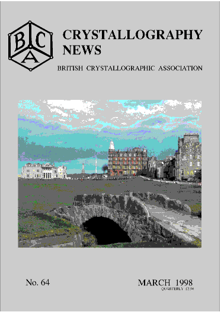

Contents Crystallography News March 98
CRYSTALLOGRAPHY NEWS NO. 64 MARCH 1998

cover story
FROM THE PRESIDENT
p 2
remarks p 2
FROM THE SECRETARY
-
Council Members 1997-1998 p 4,5
- Current
Chairmen of Groups p 3
- AGM98 -
Call for nominations for Officials, Agenda p 6
- Report to BCA Council for 1997 p 7
- Proposed changes in BCA statutes p 8
- Call for Nominations for the Ewald Prize p11
FROM THE TREASURER
- Bursaries awarded for St.Andrews meeting p 3
FROM THE ADMINISTRATIVE SECRETARY
- BCA Bursaries for 1997 p 9
- Applying for Bursaries in 1998 p10
FROM THE BCA GROUPS
BSG report of winter 97
meeting p39
BSG report of
CCP4 study weekend
Databases for macromolecular crystallography p40 - 42
CCG AGM and Draft Constitution p17 - 20
CCG report on November 97 meeting p32 - 35
IG forthcoming meetings,
and industrial award p49 - 51
IG report of winter meeting 1997 p48
PCG
report of winter meeting 97 p26
NEWS and VIEWS
CLRC News
- M.Mchahon prizes
- Diamond plans p29 - 31
Cover Story p2
Short news items and Help wanted p59
Old science books wanted for OXFAM p37
IoP Prize for BCA Founder Member p58
Several databases launched for women scientists p60
EDUCATION
Book Review
- High Pressure equipment p28
BSG protein
crystallography summer school p43
Crystal growing prizewinners p32
ICDD scholarship awards p27
New
educational materials from Tarquin p63
FORTHCOMING MEETINGS
BCA 98 St. Andrews p12 - 25
The Amazing Dorothy Hodgkin p17
SUMMARY OF FORTHCOMING MEETINGS p53 - 57
Other meetings p44, 46, 52
OTHER MEETING REPORTS
Organic Crystal Chemistry Symposium p36
EDITORIALS
BCA WEB SITE move p10
Few old Newsletters still needed p59
COMPETITION
March Competition
name the mineral p63
Contributors to this issue
A.J.Blake p32-35
T.Carter p48,
S.Collins p31,
M.Cooper p29,
K.M.Crennell p32, p58-61
S.J.Harris p9-10,
A.M.Glazer p2,
D.W.Jones p36,
J.A.Jutson, p51,
R.Liddington p39,
J.S.Loveday p28,
S.J.Maginn p3,
M.McMahon p27,
H.Muirhead p6 -8,
M.Winn p40,
Page last updated 22 Apr 1999
BCA Home page WebMaster
BCA@ISISE.RL.AC.UK
 Click here to return to BCA homepage
Click here to return to BCA homepage